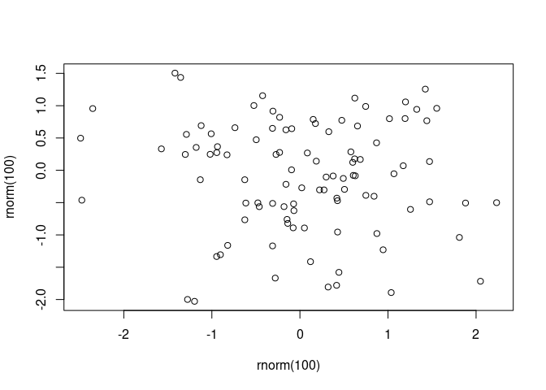

The goal of documentNumbering is to provide figure and table numbering in Rmd output formats that don’t normally provide figure numbers. This package exists as an alternative to the number referencing provided by the bookdown package.
Installation
You can currently install from GitHub with:
# install.packages("remotes")
remotes::install_github("rmflight/documentNumbering")Examples
R6 Object
The easiest way to use this is the actual {R6} object, dn_counter that gets updated, and contains all the information for printing, and which you initialize with whatever values you want for a prefix, and a character to use to replace any spaces in the prefix.
library(documentNumbering)
# a normal example in a main manuscript
my_counter = dn_counter$new("Figure ", "_")
my_counter
#> dn_counter:
#> prefix: Figure
#> file_replace: Figure_
#> count:
#> names:
#> NULL
# one where you want an "S" in front of the number
s_counter = dn_counter$new("Figure S", "_")When it is initialized, there are no counts, and no names for the counts.
Increment the Count
my_counter$increment("descriptive_name")
my_counter
#> dn_counter:
#> prefix: Figure
#> file_replace: Figure_
#> count: 1
#> names:
#> [1] "descriptive_name"Here we can see that the count now includes a “1”, and the descriptive_name we supplied.
Paste in Text
Now we want to refer to it in the text, we can do:
my_counter$label_text("descriptive_name")
#> [1] "Figure 1"Refer to Multiple
Often we want to refer to multiple figures at once:
# add another entry first
my_counter$increment("descriptive_2")
my_counter$label_text(c("descriptive_name", "descriptive_2"))
#> [1] "Figure 1, 2"Change Name
If we’ve supplied the incorrect name, we can change it if you really want (I doubt this comes up much, but it’s there).
my_counter$rename("descriptive_name", "descriptive_1")
my_counter
#> dn_counter:
#> prefix: Figure
#> file_replace: Figure_
#> count: 1, 2
#> names:
#> [1] "descriptive_1" "descriptive_2"File Paths
In addition to just using the counter, there is the ability to modify the file names of the figures generated. This is particularly useful if you are creating figure files for a manuscript. If you set keep_md: true in the yaml header, and then you can add a custom figure processor:
output:
word_document:
keep_md: true
knitr::opts_chunk$set(fig.processor = dn_modify_path)And then to rename the figure file, you set a custom chunk option, counter_identifier:
```{r rename_chunk, counter_identifer = my_counter$label_file("descriptive_1")}
plot(rnorm(100), rnorm(100))
```The figure file will be prepended with Figure_1_ in the output directory that is generated, which makes it much easier to refer to when uploading files or sharing them with collaborators.
Traditional Functional R
For basic usage, you initialize any counters you need:
library(documentNumbering)
figure_counts = dn_initialize_counter()
table_counts = dn_initialize_counter()From there, you can add to each one with identifiers, and then subsequently use it to reference it later:
figure_counts = dn_increment_counter(figure_counts, "plot1")
plot(rnorm(100), rnorm(100))
And now you can refer to it in the text:
r dn_figure_string(figure_counts, "plot1"). Shows the result of plotting a random normal.
Figure 1. Shows the result of plotting a random normal.
For table numbers, you can use dn_table_string.
Both dn_table_string and dn_figure_string are wrappers around the more general dn_paste_counter, where you can supply any text you want:
dn_paste_counter(figure_counts, "Whoa ", "plot1")
#> [1] "Whoa 1"Disadvantage
You need to define the counter identifier before it can be used. That can be annoying, but in practice it’s not too bad.
Modifying Figure Names
In addition to just using the counter, there is the ability to modify the file names of the figures generated. This is particularly useful if you are creating figure files for a manuscript. If you set keep_md: true in the yaml header, and then you can add a custom figure processor:
output:
word_document:
keep_md: true
knitr::opts_chunk$set(fig.processor = dn_modify_path)And then to rename the figure file, you set a custom chunk option, counter_identifier:
```{r rename_chunk, counter_identifer = dn_figure_rename(figure_counts, "plot1")}
plot(rnorm(100), rnorm(100))
```The figure file will be prepended with figure_1_ in the output directory that is generated, which makes it much easier to refer to when uploading files or sharing them with collaborators.